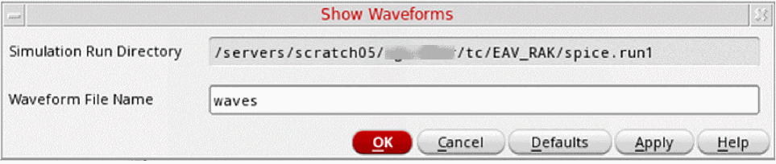

Viewing Waveform Results in the Schematic
To display the waveforms produced during a simulation:
-
In the schematic window, choose Simulation – Show Waveforms.
The Show Waveforms form appears.
The Simulation - Show Waveforms command is enabled only after you have used the Initialize command to initialize the simulation environment. - In the Waveform File Name field, specify the name of the waveform file to be displayed.
- Click OK.
The system opens the waveform window and displays information for the simulation run and the waveform file you specified. You can now execute any of the waveform commands to manipulate and display specific waveforms.
Related Topics
Viewing Waveform Results in Register Format
Initializing the Simulation Environment
Return to top